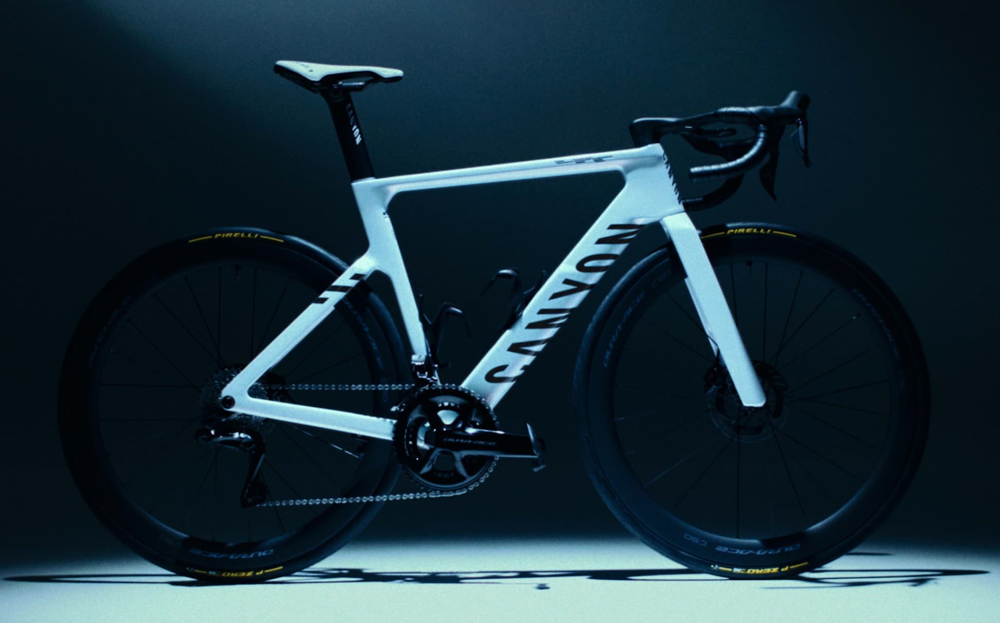

STUMPJUMPER 15
Cascade Components 156mm Mullet Link: More Travel, More Progression
Jul 15, 2026

SRAM
SRAM 1x on a Road Bike: Is It Finally Worth It?
Jul 14, 2026

STUMPJUMPER 15
Why I Chose the Stumpjumper 15 Alloy for My Trail Build
Jul 8, 2026

SPECIALIZED
Specialized Tarmac SL9 Is Official: Here's What Actually Changed
Jun 30, 2026
Latest Posts
STUMPJUMPER 15
Cascade Components 156mm Mullet Link: More Travel, More Progression
Jul 15, 2026
SRAM
SRAM 1x on a Road Bike: Is It Finally Worth It?
Jul 14, 2026
STUMPJUMPER 15
Why I Chose the Stumpjumper 15 Alloy for My Trail Build
Jul 8, 2026
SPECIALIZED
Specialized Tarmac SL9 Is Official: Here's What Actually Changed
Jun 30, 2026
Latest from the Workshop
View all →
STUMPJUMPER 15
Cascade Components 156mm Mullet Link: More Travel, More Progression
This is part two of my Stumpjumper 15 Alloy build series. If you missed the setup — why I picked an …
Jul 15, 2026
STUMPJUMPER 15
Why I Chose the Stumpjumper 15 Alloy for My Trail Build
Every build starts with a question, and mine was blunt: could I put together a trail bike I’d …
Jul 8, 2026

BIKE BUILDS
Factor Ostro VAM V2 Build
The Factor Ostro VAM V2 is designed to be both lightweight and aerodynamic — a combination most …
Apr 9, 2026
Every build on this site starts as a video
Full builds, teardowns, and the stuff that doesn’t make it into the articles — on the Mizubikes YouTube channel.
Latest Reviews
View all →

BIKE REVIEWS
Canyon Endurace CFR 2026 Review: Should You Buy It?
The new Canyon Endurace CFR has Aeroad geometry, Aeroad aerodynamics, an identical fork, and the …
Apr 11, 2026

Specialized Aethos Review: A Lightweight Road Bike for Time-Crunched Cyclists
Specialized Aethos
The Specialized Aethos might be the most quietly brilliant road bike out there. …
Apr 12, 2025